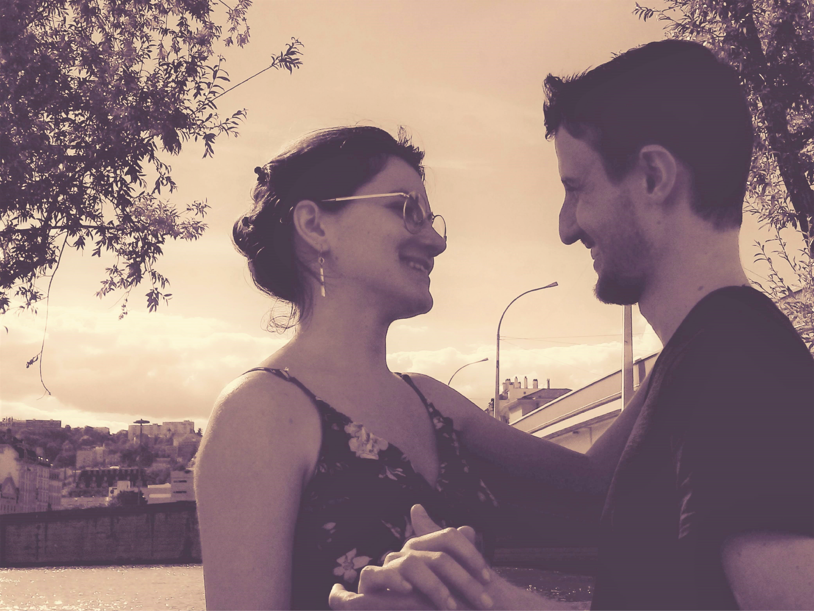

Jour J
Un animateur sera présent pour veiller sur les enfants de plus de 3 ans.
Le domaine n'accueille pas votre fidèle compagnon à quatre pattes 🐕.
Pour prolonger ce moment, un brunch sera servi dimanche 8 mai.
Nous mettrons en ligne le déroulement du grand jour le 1er février 2021.